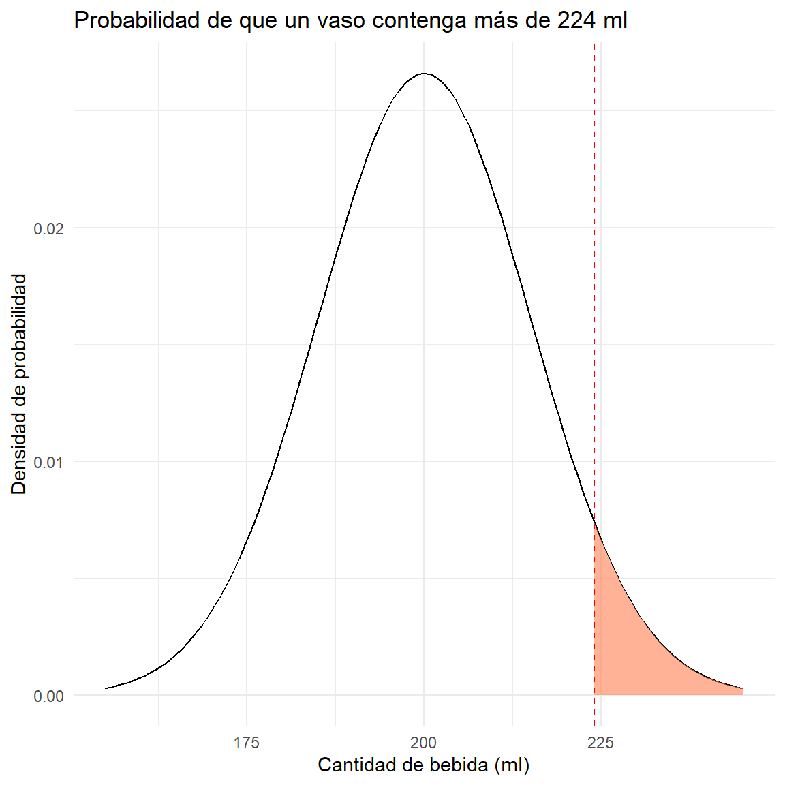
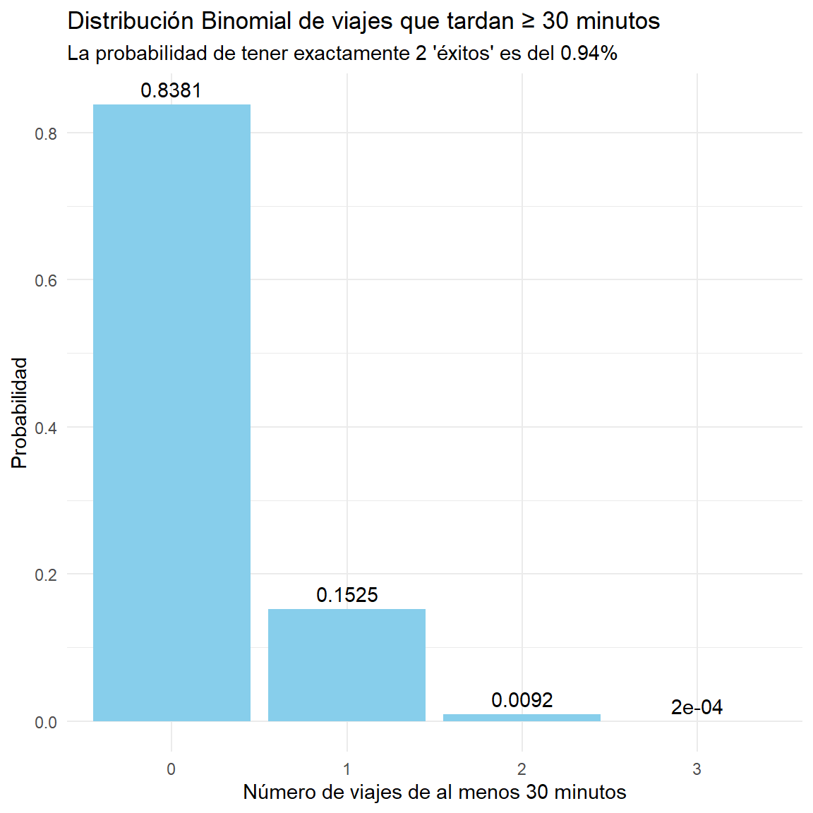
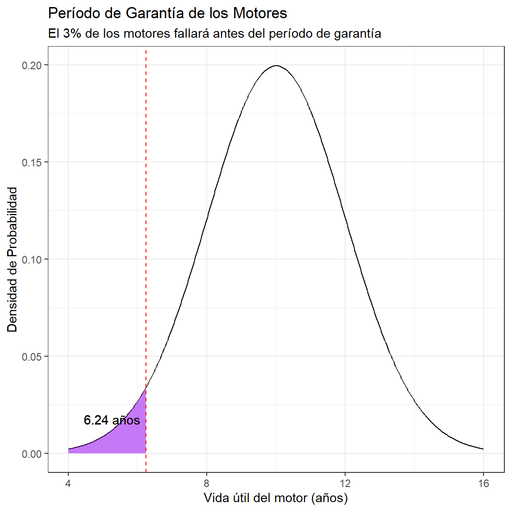
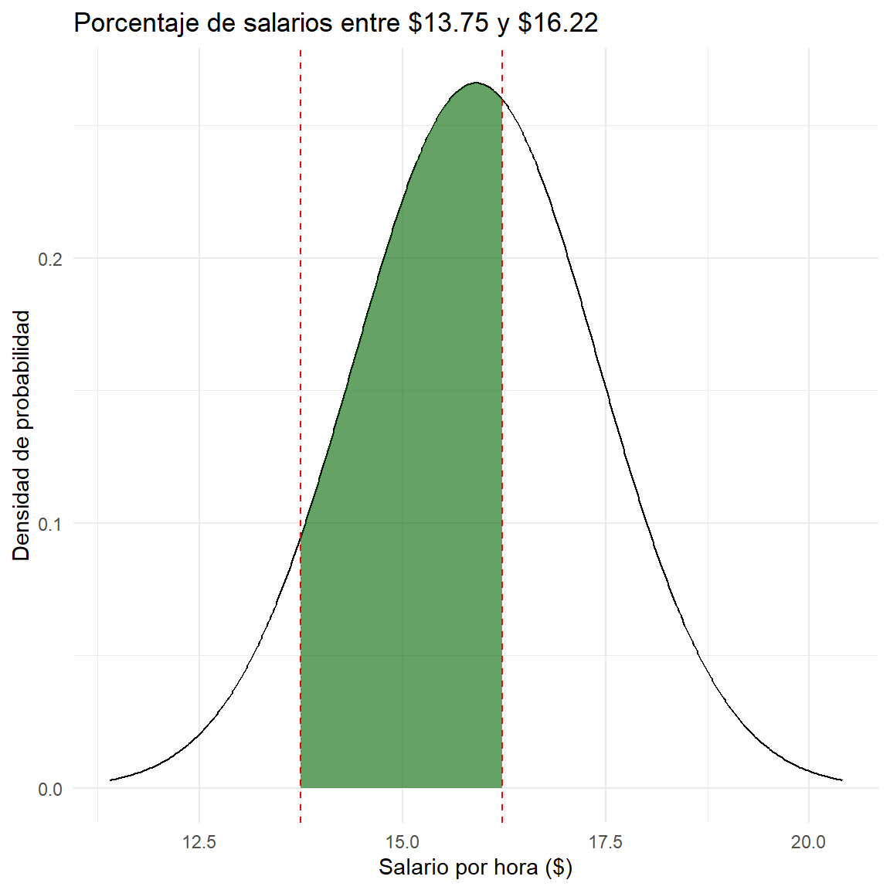

La distribución normal, también conocida como distribución gaussiana o campana de Gauss, es la distribución de probabilidad continua más importante en la estadística.
Su importancia radica en que muchos fenómenos naturales, sociales y económicos siguen este patrón.
La distribución normal es la distribución de probabilidad continua más usada en estadística y una herramienta fundamental para modelar una inmensa variedad de fenómenos en las ciencias, la ingeniería y la economía. Su popularidad se debe a una propiedad matemática conocida como el Teorema del Límite Central, que establece que la suma o el promedio de un gran número de variables aleatorias independientes (sin importar su distribución original) tiende a seguir una distribución normal.
Características Clave
La distribución normal es un tipo de distribución de probabilidad continua. Esto significa que la variable aleatoria puede tomar cualquier valor dentro de un rango determinado. Se representa por una curva simétrica en forma de campana, donde la mayor parte de los datos se agrupan alrededor del valor central.
Forma de Campana: La distribución es simétrica alrededor de su media, creando una curva con forma de campana. El punto más alto de la campana es la media.
Media, Mediana y Moda Coincidentes: En una distribución normal perfecta, estos tres valores son iguales y se encuentran en el centro de la curva.
Asintótica al Eje Horizontal: La curva se extiende indefinidamente en ambas direcciones, acercándose al eje x pero sin llegar a tocarlo.
Regla Empírica: Alrededor del 68% de los datos se encuentran dentro de una desviación estándar de la media (μ±σ), el 95% dentro de dos desviaciones estándar (μ±2σ), y el 99.7% dentro de tres desviaciones estándar (μ±3σ).
Parámetros
La distribución normal está completamente definida por dos parámetros:
Media (μ): Indica la ubicación del centro de la curva y el valor más probable.
Varianza σ2σ2 o Desviación Estándar (σ): Mide la dispersión o variabilidad de los datos. Una σ grande resulta en una curva más ancha y aplanada, mientras que una σ pequeña crea una curva más estrecha y alta.
Fórmulas
La fórmula principal de la distribución normal es la función de densidad de probabilidad (FDP). Esta función no calcula la probabilidad de un punto exacto, sino la densidad de probabilidad en ese punto.
Función de Densidad de Probabilidad (FDP):
f(x)=σ2π
1e−21(σx−μ)2
Donde:
x es el valor de la variable aleatoria.
μ es la media.
σ es la desviación estándar.
e es el número de Euler (aproximadamente 2.71828).
π es la constante pi (aproximadamente 3.14159).
Para calcular probabilidades, se utiliza la distribución normal estándar, que tiene una media de 0 y una desviación estándar de 1. Cualquier variable normal puede estandarizarse usando la siguiente fórmula:
Formula de Estandarización (puntuación Z):
Z=x−μσ
Z=σx−μ
La puntuación Z nos dice cuántas desviaciones estándar está un valor dado de la media. Luego, se usan tablas o software estadístico para encontrar las probabilidades correspondientes.
2.1 Ejercicios
Ejercicio 6.7
Un investigador científico informa que unos ratones vivirán un promedio de 40 meses cuando sus dietas se restringen drásticamente y después se enriquecen con vitaminas y proteínas. Suponiendo que la vidas de tales ratones se distribuyen normalmente con una desviación estándar de 6.3 meses, encuentre la probabilidad de que un ratón dado vivirá:
a) más de 32 meses b) menos de 28 meses c) entre 37 y 49 meses
La probabilidad de que un ratón viva más de 32 meses es 0.8979.
Grafica
Ver código
media <-40desviacion_estandar <-6.3rango <-c(media -3* desviacion_estandar, media +3* desviacion_estandar)ggplot(data.frame(x = rango), aes(x = x)) +# Curva de la distribución normalstat_function(fun = dnorm, args =list(mean = media, sd = desviacion_estandar), n =500, color ="black") +# Resaltar el área de interés (X > 32)geom_area(stat ="function", fun = dnorm, args =list(mean = media, sd = desviacion_estandar),fill ="steelblue", xlim =c(32, rango[2]), alpha =0.5) +# Etiquetas y títuloslabs( title ="Distribucion Normal", subtitle ="Probabilidad de vivir más de 32 meses", x ="Vida en meses", y ="Densidad de Probabilidad" ) +theme_bw() +# Línea para el valor de 32geom_vline(xintercept =32, linetype ="dashed", color ="red") +geom_text(aes(x =32, y =0.01, label ="32 meses"), hjust =-0.1, vjust =-1)
La probabilidad de que un ratón viva más de 32 meses es 89.79%
Cual es la probabilidad de que un ratón dado vivirá más de 28 meses.
La probabilidad de que un ratón viva más de 32 meses es 0.0284.
Grafica
Ver código
media <-40desviacion_estandar <-6.3rango <-c(media -3* desviacion_estandar, media +3* desviacion_estandar)ggplot(data.frame(x = rango), aes(x = x)) +# Curva de la distribución normalstat_function(fun = dnorm, args =list(mean = media, sd = desviacion_estandar), n =500, color ="black") +# Resaltar el área de interés (X < 28)geom_area(stat ="function", fun = dnorm, args =list(mean = media, sd = desviacion_estandar),fill ="orange", xlim =c(rango[1], 28), alpha =0.5) +# Etiquetas y títuloslabs( title ="Distribucion Normal", subtitle ="Probabilidad de vivir menos de 28 meses", x ="Vida en meses", y ="Densidad de Probabilidad" ) +theme_bw() +# Línea para el valor de 28geom_vline(xintercept =28, linetype ="dashed", color ="red") +geom_text(aes(x =28, y =0.01, label ="28 meses"), hjust =1.1, vjust =-1)
La probabilidad de que un ratón viva más de 32 meses es 2.84%.
Cual es la probabilidad de que un ratón dado vivirá más de 49 meses.
La probabilidad de que un ratón viva más de 32 meses es 0.6065.
Grafica
Ver código
media <-40desviacion_estandar <-6.3rango <-c(media -3* desviacion_estandar, media +3* desviacion_estandar)ggplot(data.frame(x = rango), aes(x = x)) +# Curva de la distribución normalstat_function(fun = dnorm, args =list(mean = media, sd = desviacion_estandar), n =500, color ="black") +# Resaltar el área de interés (37 < X < 49)geom_area(stat ="function", fun = dnorm, args =list(mean = media, sd = desviacion_estandar),fill ="purple", xlim =c(37, 49), alpha =0.5) +# Etiquetas y títuloslabs( title ="Distribucion Normal", subtitle ="Probabilidad de vivir entre 37 y 49 meses", x ="Vida en meses", y ="Densidad de Probabilidad" ) +theme_bw() +# Líneas para los valores de 37 y 49geom_vline(xintercept =37, linetype ="dashed", color ="red") +geom_vline(xintercept =49, linetype ="dashed", color ="red") +geom_text(aes(x =37, y =0.01, label ="37"), hjust =1.1, vjust =-1) +geom_text(aes(x =49, y =0.01, label ="49"), hjust =-0.1, vjust =-1)
La probabilidad de que un ratón viva más de 32 meses es 60.65%.
Ejercicio 6.9
Una máquina expendedora de bebidas gaseosas se regula para que sirva un promedio de 200 mililitros por vaso. Si la cantidad de bebida se distribuye normalmente con una desviación estándar igual a 15 mililitros,
a) ¿qué fracción de los vasos contendrá más de 224 mililitros? b) ¿cuál es la probabilidad de que un vaso contenga entre 191 y 209 mililitros? c) ¿cuántos vasos probablemente se derramarán si se utilizan vasos de 230 mililitros para las siguientes 1000 bebidas?
La probabilidad de que una fraccion de vasos contendrá más de 224 mililitros es 0.0548
Grafica
Ver código
rango <-c(media -3* desviacion_estandar, media +3* desviacion_estandar)ggplot(data.frame(x = rango), aes(x = x)) +stat_function(fun = dnorm, args =list(mean = media, sd = desviacion_estandar)) +geom_area(stat ="function", fun = dnorm, args =list(mean = media, sd = desviacion_estandar),fill ="coral", xlim =c(224, max(rango)), alpha =0.6) +labs( title ="Probabilidad de que un vaso contenga más de 224 ml", x ="Cantidad de bebida (ml)", y ="Densidad de probabilidad" ) +geom_vline(xintercept =224, linetype ="dashed", color ="red") +theme_minimal()

La probabilidad de que una fraccion de vasos contendrá más de 224 mililitros es 54.8%.
¿Cuál es la probabilidad de que un vaso contenga entre 191 y 209 mililitros?
Ver código
media <-200desviacion_estandar <-15prob_b_superior <-pnorm(209, mean = media, sd = desviacion_estandar)prob_b_inferior <-pnorm(191, mean = media, sd = desviacion_estandar)prob_b <- prob_b_superior - prob_b_inferiorcat("b)", round(prob_b, 4), "\n")
b) 0.4515
La probabilidad de que un vaso contenga entre 191 y 209 mililitros es de 0.4515.
Grafica
Ver código
rango <-c(media -3* desviacion_estandar, media +3* desviacion_estandar)ggplot(data.frame(x = rango), aes(x = x)) +stat_function(fun = dnorm, args =list(mean = media, sd = desviacion_estandar)) +geom_area(stat ="function", fun = dnorm, args =list(mean = media, sd = desviacion_estandar),fill ="darkgreen", xlim =c(191, 209), alpha =0.6) +labs( title ="Probabilidad de un vaso entre 191 ml y 209 ml", x ="Cantidad de bebida (ml)", y ="Densidad de probabilidad" ) +geom_vline(xintercept =191, linetype ="dashed", color ="red") +geom_vline(xintercept =209, linetype ="dashed", color ="red") +theme_minimal()
La probabilidad de que un vaso contenga entre 191 y 209 mililitros es de 45.15%.
¿Cuántos vasos probablemente se derramarán si se utilizan vasos de 230 mililitros para las siguientes 1000 bebidas?
Ver código
media <-200desviacion_estandar <-15total_vasos <-1000prob_derramarse <-1-pnorm(230, mean = media, sd = desviacion_estandar)vasos_derramados <- prob_derramarse * total_vasoscat("c)", round(vasos_derramados), "vasos\n")
c) 23 vasos
Si se utilizan vasos de 230 mililitros para las siguientes 1000 bebidas probablemente se derramarán 23 vasos.
Grafica
Ver código
rango <-c(media -3* desviacion_estandar, media +3* desviacion_estandar)ggplot(data.frame(x = rango), aes(x = x)) +stat_function(fun = dnorm, args =list(mean = media, sd = desviacion_estandar)) +geom_area(stat ="function", fun = dnorm, args =list(mean = media, sd = desviacion_estandar),fill ="purple", xlim =c(230, max(rango)), alpha =0.6) +labs( title ="Probabilidad de que un vaso se derrame", x ="Cantidad de bebida (ml)", y ="Densidad de probabilidad" ) +geom_vline(xintercept =230, linetype ="dashed", color ="red") +theme_minimal()
Si se utilizan vasos de 230 mililitros para las siguientes 1000 bebidas probablemente se derramarán 23 vasos.
Ejercicio 6.11
Un abogado viaja todos los días de su casa en los suburbios a su ofi cina en el centro de la ciudad. El tiempo promedio para un viaje sólo de ida es 24 minutos, con una desviación estándar de 3.8 minutos. Suponga que la distribución de los tiempos de viaje está distribuida normalmente.
a) ¿Cuál es la probabilidad de que un viaje tome al menos 1/2 hora? b) Si la oficina abre a las 9:00 A.M. y él sale diario de su casa a las 8:45 A.M., ¿qué porcentaje de las veces llegará tarde al trabajo? c) Si sale de su casa a las 8:35 A.M. y el café se sirve en la oficina de 8:50 A.M. a 9:00 A.M., cuál es la probabilidad de que se pierda el café? d) Encuentre la longitud de tiempo por arriba de la cual encontramos e1 15% de los viajes más lentos. e) Encuentre la probabilidad de que 2 de los siguientes 3 viajes tomen al menos 1/2 hora.
Si la oficina abre a las 9:00 A.M. y él sale diario de su casa a las 8:45 A.M. 99.11 %xxx llegará tarde al trabajo.
Grafica
Ver código
rango <-c(media -3* desviacion, media +3* desviacion)ggplot(data.frame(x = rango), aes(x = x)) +stat_function(fun = dnorm, args =list(mean = media, sd = desviacion), n =500) +geom_area(stat ="function", fun = dnorm, args =list(mean = media, sd = desviacion),fill ="#3de3c2", xlim =c(15, max(rango)), alpha =0.6) +labs(title ="Distribucion Normal", x ="Tiempo de viaje (minutos)", y ="Densidad de Probabilidad") +geom_vline(xintercept =15, linetype ="dashed", color ="red") +theme_minimal()
Si la oficina abre a las 9:00 A.M. y él sale diario de su casa a las 8:45 A.M. 99.11 % llegará tarde al trabajo.
Si sale de su casa a las 8:35 A.M. y el café se sirve en la oficina de 8:50 A.M. a 9:00 A.M., cuál es la probabilidad de que se pierda el café?
AdvertenciaAdvertencia
Este inciso es un problema de distribución binomial, no normal, ya que se trata de un número discreto de “éxitos” (viajes de más de 30 minutos) en un número fijo de intentos (3 viajes). Por lo tanto, la gráfica no es una curva de densidad normal, sino un gráfico de barras de la distribución binomial.
La probabilidad de que 2 de los siguientes 3 viajes tomen al menos 1/2 hora es 0.0092.
Grafica
Ver código
p_exito <-1-pnorm(30, mean =24, sd =3.8) n_viajes <-3exitos_deseados <-0:n_viajesprobabilidades <-dbinom(exitos_deseados, size = n_viajes, prob = p_exito)df_binomial <-data.frame( num_exitos =factor(exitos_deseados), prob = probabilidades)library(ggplot2)ggplot(df_binomial, aes(x = num_exitos, y = prob)) +geom_bar(stat ="identity", fill ="skyblue") +geom_text(aes(label =round(prob, 4)), vjust =-0.5) +labs( title ="Distribución Binomial de viajes que tardan ≥ 30 minutos", subtitle ="La probabilidad de tener exactamente 2 'éxitos' es del 0.94%", x ="Número de viajes de al menos 30 minutos", y ="Probabilidad" ) +theme_minimal()

La probabilidad de que 2 de los siguientes 3 viajes tomen al menos 1/2 hora es 0.92%.
Ejercicio 6.13
La vida promedio de cierto tipo de motor pequeño es de 10 años con una desviación estándar de 2 años. El fabricante reemplaza gratis todos los motores que fallen dentro del periodo de garantía. Si él está dispuesto a reemplazar sólo 3% de los motores que fallan, ¿cuánto tiempo de garantía debería ofrecer? Suponga que la duración de un motor sigue una distribución normal.
Parametros
Ver código
media <-10desviacion <-2probabilidad_fallo <-0.03
2.1.4 Solución
Ver código
tiempo_garantia <-qnorm(probabilidad_fallo, mean = media, sd = desviacion)cat("El fabricante debería ofrecer una garantía de:", round(tiempo_garantia, 2), "años\n")
El fabricante debería ofrecer una garantía de: 6.24 años
Grafica
Ver código
media <-10desviacion <-2tiempo_garantia <-qnorm(0.03, mean = media, sd = desviacion)rango <-c(media -3* desviacion, media +3* desviacion)ggplot(data.frame(x = rango), aes(x = x)) +stat_function(fun = dnorm, args =list(mean = media, sd = desviacion), n =500, color ="black") +geom_area(stat ="function", fun = dnorm, args =list(mean = media, sd = desviacion), fill ="purple", xlim =c(min(rango), tiempo_garantia), alpha =0.6) +labs( title ="Período de Garantía de los Motores", subtitle ="El 3% de los motores fallará antes del período de garantía", x ="Vida útil del motor (años)", y ="Densidad de Probabilidad" ) +theme_bw() +geom_vline(xintercept = tiempo_garantia, linetype ="dashed", color ="red") +geom_text(aes(x = tiempo_garantia, y =0.01, label =paste0(round(tiempo_garantia, 2), " años")), hjust =1.1, vjust =-1)

El fabricante debería ofrecer una garantía de 6.24 años.
Ejercicio 6.15
Una compañía paga a sus empleados un salario promedio de $15.90 por hora con una desviación estándar de $1.50. Si los salarios se distribuyen aproximadamentede forma normal y se pagan al centavo más 6.15 Una compañía paga a sus empleados un salario promedio de $15.90 por hora con una desviación estándar de $1.50. Si los salarios se distribuyen aproximadamente de forma normal y se pagan al centavo más 6.15 Una compañía paga a sus empleados un salario promedio de $15.90 por hora con una desviación estándar de $1.50. Si los salarios se distribuyen aproximadamente de forma normal y se pagan al centavo más cercano
a) ¿qué porcentaje de los trabajadores reciben salarios entre $13.75 y $16.22 inclusive por hora? b) ¿el 5% más alto de los salarios por hora de los empleados es mayor a qué cantidad?
Parametros
Ver código
media <-15.90desviacion <-1.50limite_inferior <-13.75-0.005limite_superior <-16.22+0.005
rango <-c(media -3* desviacion, media +3* desviacion)ggplot(data.frame(x = rango), aes(x = x)) +stat_function(fun = dnorm, args =list(mean = media, sd = desviacion), n =500) +geom_area(stat ="function", fun = dnorm, args =list(mean = media, sd = desviacion), fill ="darkgreen", xlim =c(limite_inferior, limite_superior), alpha =0.6) +labs( title ="Porcentaje de salarios entre $13.75 y $16.22", x ="Salario por hora ($)", y ="Densidad de probabilidad" ) +geom_vline(xintercept =c(limite_inferior, limite_superior), linetype ="dashed", color ="red") +theme_minimal()

El porcentaje de trabajadores con salarios entre $13.75 y $16.22 es 51.04 %.
¿El 5% más alto de los salarios por hora de los empleados es mayor a qué cantidad?
Ver código
media <-15.90desviacion <-1.50valor_b <-qnorm(0.95, mean = media, sd = desviacion)cat("b)", round(valor_b, 2), "$\n")
b) 18.37 $
El 5% más alto de los salarios es mayor a $18.37.
Grafica
Ver código
rango <-c(media -3* desviacion, media +3* desviacion)ggplot(data.frame(x = rango), aes(x = x)) +stat_function(fun = dnorm, args =list(mean = media, sd = desviacion), n =500) +geom_area(stat ="function", fun = dnorm, args =list(mean = media, sd = desviacion), fill ="purple", xlim =c(valor_b, max(rango)), alpha =0.6) +labs( title ="El 5% de salarios más altos", x ="Salario por hora ($)", y ="Densidad de probabilidad" ) +geom_vline(xintercept = valor_b, linetype ="dashed", color ="red") +theme_minimal()